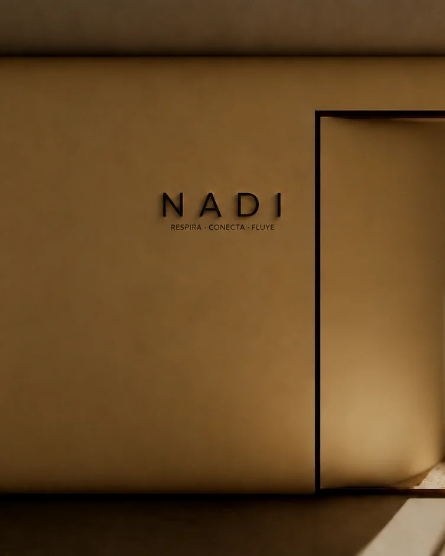

- Tipo
- Arquitectura comercial
- Ubicación
- Querétaro, México
- Año
- 2026
- Superficie
- 80 m²
- Estado
- Propuesta conceptual
- Proceso
-
- Idea
- Transformación
- Materia
Idea
Inspirado en los nadis, canales por los que fluye la energía vital según la tradición del yoga, NADI nace de la intención de transformar un espacio de dimensiones reducidas en una experiencia de conexión entre cuerpo, mente y espíritu.
La arquitectura se concibe como un recorrido sensorial. Desde el acceso, la continuidad entre el pavimento y el plafón establece una dirección mediante la materialidad y la luz, guiando al usuario hacia el salón de pilates. Al final del trayecto, una composición de chakras se convierte en el remate visual y simbólico de este camino.
El microcemento, la madera clara y el terrazzo rústico construyen una atmósfera de carácter natural, donde las texturas invitan a experimentar el espacio desde el tacto. La rugosidad del pavimento propone una relación consciente con el suelo al recorrerlo descalzo o en calcetines, mientras que la iluminación indirecta y la vegetación acompañan el movimiento y refuerzan una sensación de serenidad e introspección.
NADI propone una arquitectura que no solo se contempla, sino que se recorre, se percibe y se siente. Un lugar donde cada elemento busca despertar los sentidos y conducir al usuario desde el ritmo del exterior hacia un estado de calma y conexión consigo mismo.


Proceso
El principal desafío consistió en traducir una experiencia espiritual y sensorial a un espacio de 80 m², sin comprometer su funcionalidad.
La solución surgió de entender el recorrido como el elemento articulador del proyecto. En lugar de depender únicamente de objetos decorativos, la arquitectura utiliza sus propios componentes —suelo, plafón, luz y textura— para construir una secuencia espacial continua.
Cada decisión responde a una misma intención: hacer del desplazamiento una experiencia consciente, donde la percepción del espacio comienza incluso antes de iniciar la práctica.
Ficha técnica
- Tipo
- Arquitectura comercial / Interiorismo / Bienestar
- Estado
- Propuesta conceptual no ejecutada
- Materiales
- Microcemento, madera clara, iluminación LED indirecta, vegetación y terrazzo rústico.
- Imágenes
- Visualizaciones arquitectónicas digitales (renders).
- Créditos
- ARQUEMIST.

«Un camino para desconectarse del mundo y volver a encontrarse con uno mismo».